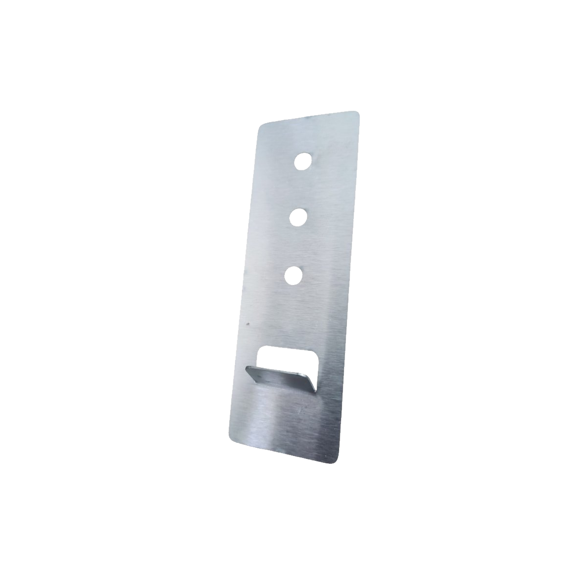
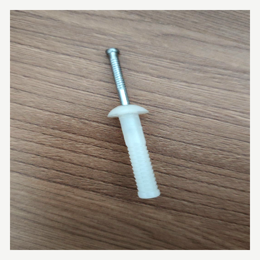

Fachadas
Fachadas Externas
Ancoragem obrigatória para fachadas ventiladas e revestimentos externos. Segurança máxima contra quedas.
Sistema de ancoragem para instalação segura de porcelanatos
e revestimentos cerâmicos em paredes e fachadas.

Placas de porcelanato estão sujeitas a forças que a argamassa sozinha nem sempre consegue suportar. Entenda os principais riscos.
Variações de temperatura causam expansão e contração das placas — sem ancoragem mecânica, o destacamento é questão de tempo.
Aplicação irregular ou espessura inadequada de argamassa reduz drasticamente a aderência — especialmente em grandes formatos.
Porcelanatos de grande formato concentram peso excessivo sobre a argamassa — a gravidade age continuamente e aumenta o risco de queda.
Impactos de obras vizinhas, tráfego pesado e recalques de solo fadigan progressivamente a ligação entre placa e substrato.
Uma placa de porcelanato 60×60 cm pode pesar mais de 15 kg. Ao se desprender da parede, representa risco real de ferimentos graves ou morte — especialmente em fachadas, halls e áreas de grande circulação. A ancoragem mecânica não é opcional: é uma responsabilidade técnica e legal do profissional executor.
Do corte no porcelanato à fixação final na parede — processo completo em obra real.
Desenvolvido por especialistas em inox para atender as exigências técnicas da construção civil moderna. Um sistema completo que oferece segurança, praticidade e durabilidade.
Ancoragem mecânica que evita o desprendimento mesmo em caso de falha da argamassa.
Proteção contra queda de placas em paredes, fachadas e áreas de grande circulação.
Especialmente indicado para porcelanatos 60×60, 90×90, 120×60 cm e maiores.
Processo simples com ferramentas convencionais. Qualquer profissional executa com facilidade.
O fixador fica completamente oculto após a instalação, sem alterar a estética final.
Aço inox 304 não enferruja. Resiste a umidade, sais e intempéries por décadas.
Versátil e eficiente para os mais variados tipos de projetos e ambientes da construção civil.
Ancoragem obrigatória para fachadas ventiladas e revestimentos externos. Segurança máxima contra quedas.
Segurança adicional em paredes de salas, corredores, halls e áreas comuns de alto tráfego.
Resistência total à umidade e intempéries. O inox garante durabilidade em ambientes agressivos.
Para casas e apartamentos que buscam máxima qualidade e segurança na instalação de revestimentos.
Shopping centers, hotéis, escritórios e lojas — onde a segurança e a responsabilidade são prioridade.
A solução ideal para placas acima de 60×60 cm onde a segurança mecânica é essencial.
Alta resistência à corrosão — indicado para fachadas, áreas externas e ambientes agressivos.
Solicitar CotaçãoExcelente resistência para ambientes internos e obras com maior volume de peças.
Solicitar Cotação
AcessórioFixação definitiva do fixador na parede. Ancoragem mecânica de alta resistência, compatível com alvenaria e concreto.
Solicitar CotaçãoNossa equipe técnica responde em até 1 hora em horário comercial. Preencha o formulário ou fale direto pelo WhatsApp.
Tudo o que arquitetos, instaladores e construtores perguntam antes de especificar.
O fixador de porcelanato é um dispositivo de ancoragem mecânica em aço inox que garante a fixação segura de revestimentos em paredes e fachadas. É recomendado para qualquer porcelanato a partir de 60×60 cm e obrigatório pela NBR 13755 em paredes externas acima de 3 metros de altura. Ao trabalhar em conjunto com a argamassa colante, elimina o risco de desprendimento mesmo em casos de dilatação térmica, vibração ou falha na argamassa.
O Aço Inox 304 (Linha Premium) possui maior teor de níquel, oferecendo resistência superior à corrosão — ideal para fachadas externas, ambientes úmidos e regiões litorâneas. Já o Aço Inox 430 (Custo-Benefício) é indicado para ambientes internos e obras com maior volume de peças, onde a relação custo-desempenho é prioridade. Ambos são fabricados em aço inox certificado com alta resistência ao arrancamento.
O fixador Pousinox é indicado para porcelanatos a partir de 60×60 cm. É especialmente recomendado para os formatos 90×90, 120×60 e 120×120 cm, onde o peso e a área da placa aumentam consideravelmente o risco de desprendimento. Uma placa de 60×60 cm pode pesar mais de 15 kg — a ancoragem mecânica é a única garantia real de segurança em altura.
A instalação deve ser realizada por um profissional especializado em revestimentos cerâmicos. O assentador executa o encaixe do fixador na borda do porcelanato antes do assentamento, fixando-o na parede com a bucha prego 6×38mm. O processo é compatível com o método convencional de assentamento com argamassa — mas a correta aplicação exige experiência técnica em revestimentos para garantir alinhamento, nivelamento e ancoragem seguros. Assista ao vídeo de instalação na seção "A Solução" para ver o passo a passo completo.
Sim, a Pousinox entrega para todo o Brasil via transportadora. O prazo varia conforme a região e o volume do pedido. Para cotação de frete e prazo específico para sua obra, entre em contato pelo WhatsApp (35) 99961-9463 com a quantidade de peças e o CEP de entrega.
Sim. O fixador de porcelanato Pousinox é desenvolvido para atender às exigências da NBR 13755, que regulamenta o revestimento de paredes e fachadas com placas cerâmicas. A norma torna obrigatória a ancoragem mecânica em fachadas externas acima de 3 metros, e o uso do fixador é a solução técnica mais segura e prática para cumprir esse requisito.
Não arrisque a integridade da sua obra. O Fixador de Porcelanato Pousinox oferece a ancoragem mecânica que faltava para uma instalação verdadeiramente segura e duradoura.